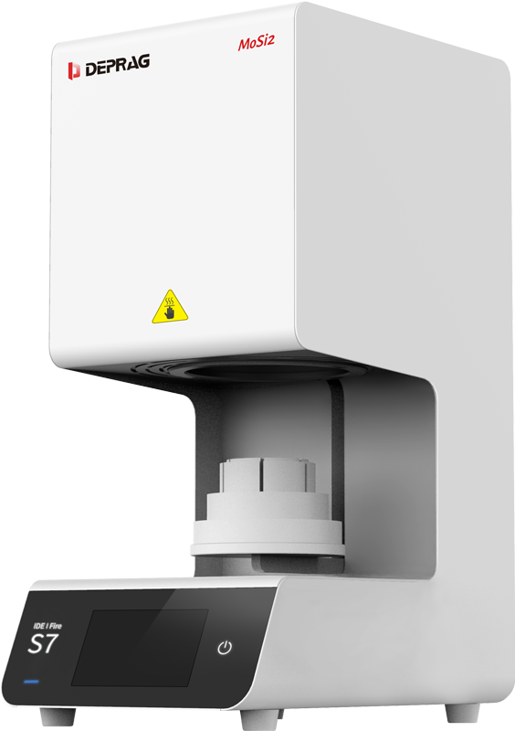
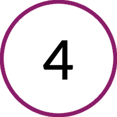

Deprag S7
S7 - это новинка от китайской компании DEPRAG. Устройство предназначено для быстрой синтеризации диоксида циркония и оснащено полной автоматикой и современным высокоинтеллектуальным программным обеспечением.
S7 оборудована 4-мя стержнями из карбида кремния, большой и удобный 7-ми дюймовый сенсорный экран, 2 режима спекания - быстрый и нормальный, функция непрерывной синтеризации, быстрое охлаждение с предварительной сушкой - все это и не только упрощает работу технику.

-

Нагревательный элемент из SIC
-

Цветной сенсорный экран высокой четкости
-

Высокая скорость нагрева (℃/мин)
Технические характеристики
| Общие характеристики | |
|---|---|
| Питание | 220 В/ 50-60 Гц |
| Максимальная мощность | 3000 Вт |
| Максимальная температура | 1600 ℃ |
| Камера сгорания | Φ100 мм |
| Объем камеры сгорания | 0.95 л |
| Скорость нагрева | ≤ 120 °C/ мин |
| Точность температуры | ±1 ℃ |
| Габариты и Вес | |
| Размеры печи | 338 × 520 × 751 мм |
| Вес | прибл. 53 кг |
| Комплектация | |
| Аксессуары | Стержни из карбида кремния, лоток для спекания, пинцет, шарики из циркония, PTCR |